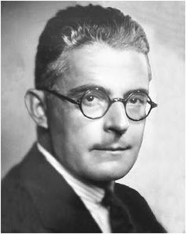

Encuentra las biografias de cada experto
Biografia de F.Skiner

Burrhus Frederic Skinner fue un psicólogo, filósofo social, inventor y autor estadounidense. Condujo un trabajo pionero en psicología experimental y defendió el conductismo, que considera el comportamiento como una función de las historias ambientales de refuerzo
Biografia de J.Watson
Burrhus Frederic Skinner fue un psicólogo, filósofo social, inventor y autor estadounidense. Condujo un trabajo pionero en psicología experimental y defendió el conductismo, que considera el comportamiento como una función de las historias ambientales de refuerzo
Biografia de Tolman

Burrhus Frederic Skinner fue un psicólogo, filósofo social, inventor y autor estadounidense. Condujo un trabajo pionero en psicología experimental y defendió el conductismo, que considera el comportamiento como una función de las historias ambientales de refuerzo